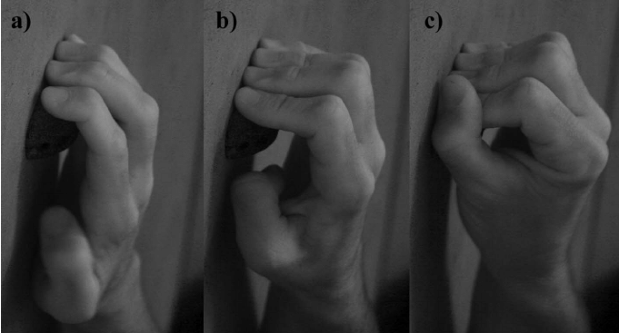

This is a set of calculators about hangboarding edge sizes, converting between them and the like. All the math is based on the equations in this study; I wrote more about how I derived everything.
A couple use notes:
According to the model there is an optimal, Platonic ideal edge on which everyone can pull the most weight (about 32mm), and after that making the edge bigger decreases the weight you can hang on it as much as does making it smaller. This means for every weight, there's two edges (one bigger than the optimal edge and one smaller) where you can hang that weight. That's why all the calculators that give you an edge size have two outputs.

Left to right: slope, half crimp, full crimp.
Sometimes these equations will spit out answers that don't really make sense, e.g. negative edge depths. Checking 'sensible outputs' mitigates that as follows:
no negative values; outputs 0 instead.
when calculating weight: if input edge is the same as the target edge, output the input weight.
when calculating edge: if the target weight is more than your maximum possible weight, output 0.
Whether you set sensible outputs or not, sometimes the equations will still come up with no real values, in which case the output will just be 'X'.